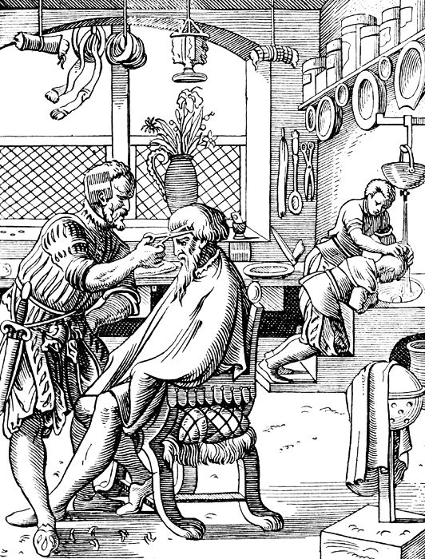

El arte de la barbería
No busques jefes, busca clientes
La barbería es un arte antiguo que, como el
buen vino, mejora con los años.
Es una profesión que requiere habilidad, pasión
y una comprensión profunda de las tendencias
y técnicas.
No busques jefes, busca clientes
La barbería es un arte antiguo que, como el
buen vino, mejora con los años.
Es una profesión que requiere habilidad, pasión
y una comprensión profunda de las tendencias
y técnicas.

Uno de los primeros indicios de este oficio data del antiguo Egipto, se le realizaban estos servicios a miembros de las más altas castas como los sacerdotes.
Igualmente, en la antigua Grecia, los hombres se reunian para realizar cuidados en cabello y barba mientras discutían asuntos importantes de filosofía y política. Posteriormente, en el Imperio Romano la barbería era un oficio cuyos practicantes los “tonsores” gozaban de una peculiar reputación en la sociedad.

En la Europa medieval la barbería estaba asociada a una profesión híbrida y peculiar, pues aquel que cortaba y acicalaba cabellos y barbas, también se dedicaba a hacer sangrías, a la extracción de dientes y muelas, o a la limpieza de piezas dentales. Varias de sus especialidades eran: realizar cirugías, enemas, amputaciones, arreglar roturas, tratar heridas, limpiar oídos, drenar forúnculos, sajar quistes, entre otras.

El corte Fade se trata de un corte de pelo degradado -generalmente masculino- donde el cabello está muy recortado en los laterales de la cabeza, las patillas y la zona de la nuca y se vuelve más largo en la parte superior de la cabeza.
La sangre que extraían los barberos para realizar flebotomías y curar a los enfermos inspiró el color rojo del poste. El blanco vino a raíz de los vendajes que usaban para contener el sangrado, mientras que el azul se añadió posteriormente para homenajear a la bandera estadounidense, según algunos historiadores. Otros afirman que el azul simplemente servía para diferenciarse de los doctores.
Una barba bien definida, siempre marcara la diferencia

En la Antigüedad, la barba era considerada un signo de sabiduría y autoridad. En Egipto, los faraones llevaban barbas postizas para mostrar su posición elevada. En Grecia, los filósofos y los hombres de la élite llevaban barbas cuidadas para demostrar su erudición y su estatus social.